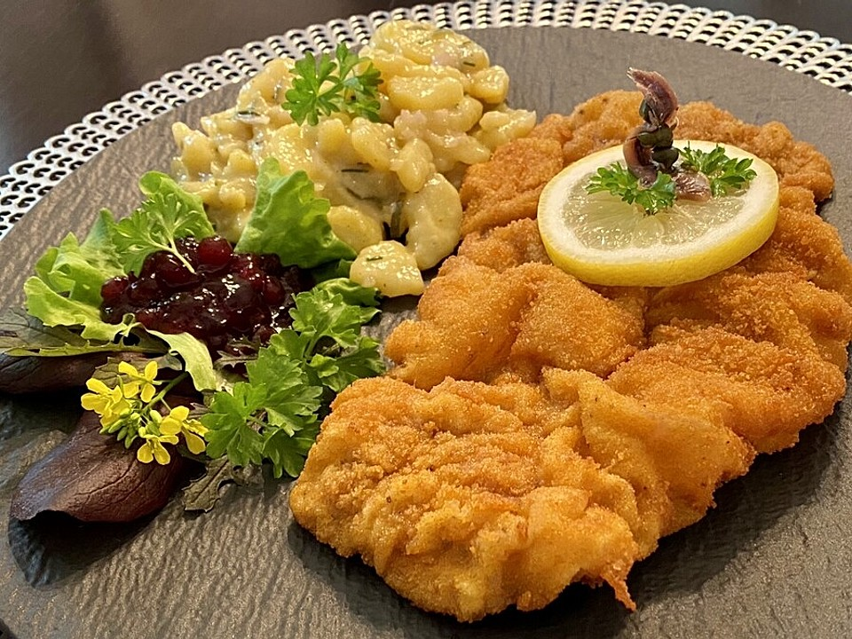

Wiener Schnitzel

Wer kann schon Nein sagen zu so einem perfekt panierten Wiener Schnitzel ?
Zutaten für 4 Personen:
- 1 kg Kalbfleisch
- Mehl
- Eier
- Paniermehl
- Butterschmalz
Kochanweisung:
- Kalbfleisch auf 1 cm dünn klopfen
- Das Kalbfleisch durch die Panierstraße ziehen. Mehl->Eier->Paniermehl
- Butterschmalz bei mittlerer Stufe vorheizen
- Das panierte Schnitzel 2-3 Minuten auf beiden Seiten goldbraun backen
- Mit Zitronenspalte und Preiselbeeren servieren
- Warm genießen
Zurück zur Startseite